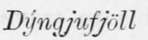

The Probable Genesis Of Askja And Iceland. Part 3
Description
This section is from the book "Askja: Iceland's Largest Volcano", by W. G. Lock. Also available from Amazon: Askja: Iceland's Largest Volcano.
The Probable Genesis Of Askja And Iceland. Part 3
The latitude of Reykjavik is 64° 9', therefore a crater' in 64° 7' would bear very slightly south of east (true), and if in 64° 18', of course but a trifle north of east, while if it bore east-north-east (22° 30' north of east) as stated, it would be within 1° 30' of the bearing of Askja from Reykjavik. Therefore, there cannot exist a doubt that the eruption seen in January from the capital was the one following the explosion within the chief of the Dyngjufjoll on the 4th of that month causing the earthquake.
It appears Burton did learn ' subsequently ' more about the eruption, for he saw Mr. Watts upon his return from Askja, and upon the map attached to his book he shows in red ink the site of the Askja eruption on the western outer (!) side of the Dyngjufjoll, and the eruption on the 29th March, the great pumice eruption, as having taken place in the Myvatn's Orcefi!!
The letter bears date the 23rd March, and was, therefore, written five days prior to the great pumice eruption. From its tenor it is evident that had not the pumice eruption on the 29th March taken place, or Jon of Viftikair visited Askja, the site of the volcano active would never have been known, and the Skaptdr Jokull would have been credited with the eruptions earlier in the year.
It is hardly to be wondered at, therefore, that not only is Hekla, the Vatna Jokull, and other volcanic vents credited with eruptions which have taken place elsewhere, bub also that in the annals of Iceland we find no mention of any eruption among the Dyngjufjoll. Eruptions that took place from the volcanic mountains in the Oddftahraun were, when recorded, mostly placed to the credit of the Trolladjngja, frequently under the name of Skjaldbreit; accordingly we find it seated that this volcano erupted in the years a.d. 1151, 1188, 1340, 1360, 1389, and 1510. In 1341 and 1510 we also find it mentioned that HertiubretiS, a mountain twelve miles north-east of Askja, erupted ; but Professor Johnstrup, who has examined Herftubreift, though I believe not made the ascent of the mountain, says this cannot be true as it is not volcanic. In 1477 and 1598 great eruptions of sand and pumice took place from some volcano or volcanoes in the interior, but which is not recorded. These were followed in 1618, 1862, and 1S72 by violent earthquakes in the north ; and in 1638, 1744, and 1862 we find it on record that flames were seen ascending in the desert.
It is highly probable that some, perhaps most, of these eruptions took place in Askja, as it is certain from the present condition of this vast crater, and the outer slopes of the mountain in which it lies, that they have been the seat of eruption after eruption during historical times. The flames that were seen ascending from the desert doubtless marked outbursts of lava from channels radiating from the volcanic vent below Askja underlying the Odaftahraun, similar to the one that burst forth in the Myvatn's Orotfi in 1875. That such did issue in about the years mentioned, the newer lava-beds seen in crossing the desert conclusively prove.
The 1875 eruptions by exposing the widely-extending sheets of basaltic lava lying beneath the Myvatn's OrcBfi, and making known the existence of a vast volcanic vent amidst the unexplored lava desert in the interior, to which we are enabled to trace the lava-flood that welled forth from a rift in the midst of a plain many miles distant from the volcano, afford in my humble opinion a clue to the post-tertiary geological history of the island ; and, although no professor of geology, I will venture to translate f the record of the rocks/ and repeat the story that the physical features of Iceland impart to me.
It was for a long time assumed that a fissure filled in with trachytic-lava bisected the island from S.W. to N.E., and that all the volcanic vents of Iceland lay upon this fissure ; but as the interior became better known to modern scientists this theory was exploded, it being impossible to travel any distance without falling in with beds of lava that had welled forth through rifts in the more superficial rocky strata, presumably above channels in the substrata ; while, moreover, in every part of the island volcanic mountains were met with that had erupted in comparatively recent times, and, as we shall presently see, there is a chain of volcanoes stretching across the island from south to north. Still, no great central vent was suspected in the interior of the island, although in the last few years a vague belief has prevailed that the various volcanic mountains that had been active since the settlement of the island were connected in some manner. That a central vent with radiating channels does exist is, however, now quite certain : and it is moreover equally so that the vast sheets of basaltic lava which we saw bared in the Orcefi, and which underlie the OddSahraun, issued from this vent. It will be remembered that on the way to Askja we saw what the last that spread around must have been like, by the manner in which its surface had cooled; a veritable ocean of molten rock, almost or quite stationary, which had congealed evenly save where gigantic dome-shaped bubbles were formed by gases generated within or below the heated mass.
The presence of these vast lava deposits is conclusive evidence that the portion of the interior mentioned had, at one time, far less elevation than at present, and that it has been builded up by the deposition of the sheets of rock much in the same manner as a huge cauldron-shaped hollow in the heart of the  in more recent times has been filled up with smaller ones. 1 believe, indeed, that the greater part of the island of a less elevation than 1,500 feet has been builded up in this manner, as everywhere from sea level to this altitude, save where tracts of detritus brought down by the glacier and surface water are met with near the coast, the formation where exposed by earthquake rifts and river beds appears to be the same.
Continue to:
- prev: The Probable Genesis Of Askja And Iceland. Part 2
- Table of Contents
- next: The Probable Genesis Of Askja And Iceland. Part 4